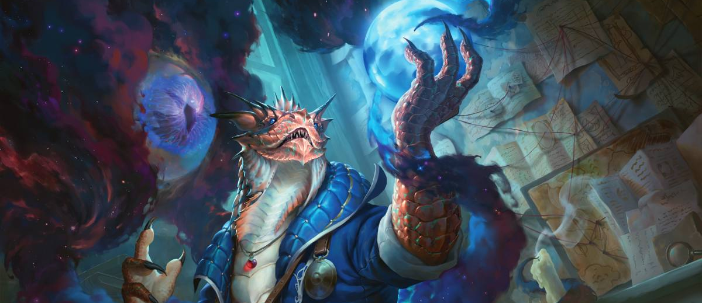

Esta clase son una faceta mas oscura de los lanzadores de hechizos, la obtienen sirviendo o vinculandose a un ser poderoso de otro plano, dandoles la capacidad de lanzar hechizos y de obtener habilidades de vuestro patrón. Suelen estár detras de los tanques, tienen vida media y armadura baja
Los brujos son personajes, que para obtener poder hicieron un pacto, por lo que puede haber limitaciones o peticiones de mano de tu patrón. (esto depende de como querais rolearlo, puede no imponerse peticiones o limitaciones). Como hemos dicho, reciben habilidades y sus hechizos de su patrón, dependera de la subclase, ya que eso indica a que tipo de ser estás vinculado. Sus hechizos también son algo diferente a lo habitual, ya que estos, tienen menor capacidad de hechizos, pero a diferente al resto de clases con hechizos, estos recuperan sus hechizos haciendo un descanso corto.